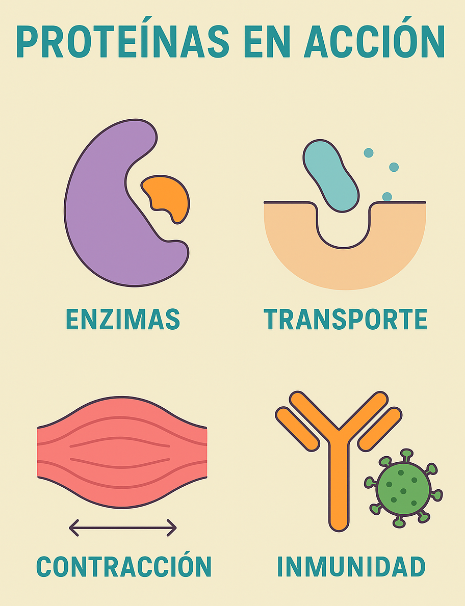

Las proteínas desempeñan un papel fundamental en todos los organismos vivos. Su diversidad estructural les permite cumplir funciones biológicas esenciales que aseguran el correcto funcionamiento del cuerpo humano y de los seres vivos en general.
Las proteínas no solo construyen estructuras y catalizan reacciones, también actúan como sensores y comunicadores celulares. Gracias a ellas, las células pueden responder a cambios en el ambiente, activar mecanismos de defensa y coordinar procesos complejos como el crecimiento o la reproducción.
En el sistema inmunológico, las proteínas son la primera línea de defensa. Los anticuerpos reconocen y neutralizan sustancias extrañas, mientras que otras proteínas regulan la inflamación y coordinan la respuesta inmune adaptativa. Sin estas funciones, el organismo quedaría vulnerable a infecciones.
También son claves en el metabolismo: las enzimas permiten que las reacciones ocurran millones de veces más rápido que de forma natural. Esto asegura que el cuerpo pueda obtener energía de los alimentos y mantener un equilibrio interno (homeostasis) en todo momento.
Finalmente, las proteínas tienen aplicaciones prácticas en la biotecnología y la medicina. Muchas terapias modernas se basan en proteínas recombinantes, como la insulina sintética para la diabetes o los anticuerpos monoclonales usados en el tratamiento del cáncer y enfermedades autoinmunes.
Basado en Lehninger Principles of Biochemistry (Nelson & Cox, 2021), Biochemistry (Berg et al., 2022), Guyton and Hall (2021), y artículos recientes de Journal of Molecular Biology (2023).
Arriba